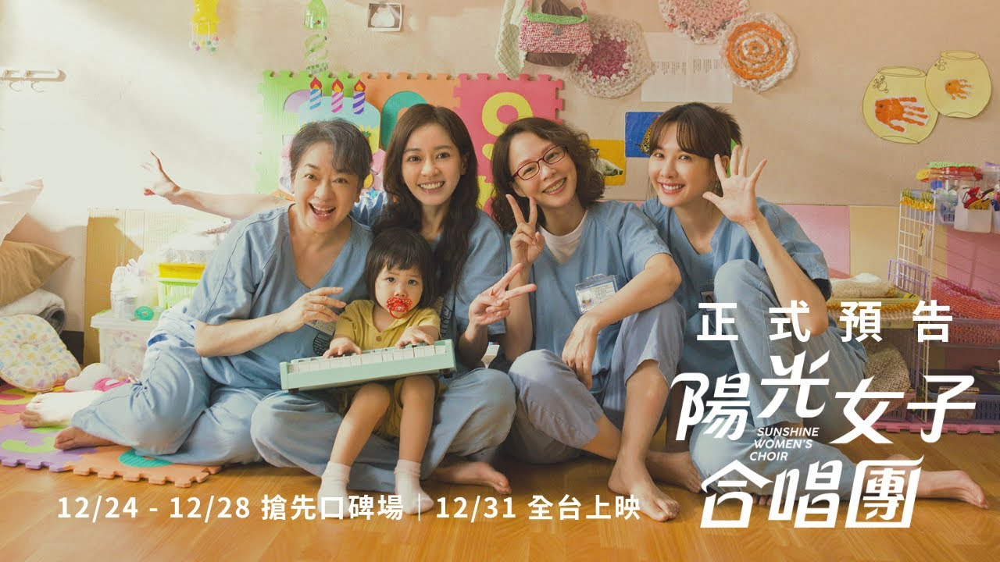

江宥倢 Tim
世新大學學生，就讀資訊傳播學系，一個I人，但我不覺得自己I
我就讀世新大學資訊傳播學系，今年大一．我覺得我興趣蠻廣的，其實我什麼都看都聽，動漫、韓團都看一點，流行音樂都聽。要說最喜歡的作品的話，那還是《哆啦A夢》，我每年電影都會去看。最近有在追星，也噴了不少錢，希望我到畢業時不要破產。
| 項目 | 內容 | 難度 |
|---|---|---|
| 掃地/拖地 | 把整個房間包含廁所陽台地板都要擦拭一遍，很耗時間也耗體力。 | |
| 櫃子/桌椅 | 擦拭過一遍，不能放過任何死角。 | |
| 搬家具 | 超累，這個需要兩個以上才能完成，也是最耗體力的工作。 | |
| 倒垃圾 | 最輕鬆的工作，不需要太多力氣。 |

今年年初的電影，我覺得是今年國片裡最好看的，雖然評價很兩極，有人覺得只是為了哭而哭，但我覺得這也是它好看的關鍵。劇情邏輯清晰，不會有看不懂的情況，結局我不太喜歡，但整體來說我會給80分以上。我其實不太容易看作品被感動，但這部有成功打動到我，所以我很喜歡，而且可以用文化幣，所以更高分。
今年四月的電影，也是我今年目前為止唯一看的動畫電影。這部影評其實評價不好，但對於喜歡玩馬力歐系列的我來看剛剛好。它的故事角色和人設劇情都很還原馬力歐的作品。儘管劇情沒什麼太大的突出，或者驚喜，但也不會到不知道在演什麼，故事邏輯比較簡單，也可能是要給低年齡層的觀眾欣賞，但也不影響這部電影的精緻度，總體我可以給到70分以上，不過我覺得要看第一部再來看會比較好。
我最近覺得最好看的電影，這部有90分以上的水準，但這部很明顯是第一集的續集，絕對要先看第一部才清楚所有人物設定。他把所有第一步的演員請回來就有一定高分，加上有延續第一部的理念，在這部都交代得很清楚，所有關於第一部遺憾或者缺少的點都有得到了圓滿的結局。而且這部有Lady Gaga這樣的大明星加持，更讓這部多了時尚感。我真的最喜歡這部。